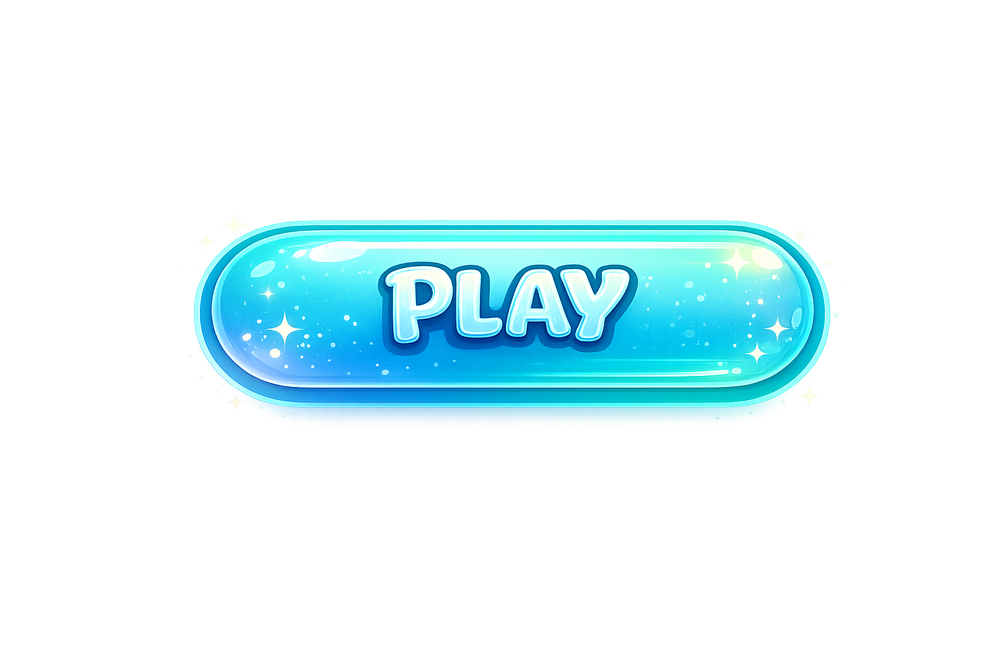

Niveau
1
Bulles
3
Score
0
Temps
0s

editor
next
retry
replay
🧡 Wispy Puff — dirige le personnage !
PC :
joystick (bas-gauche) ou
WASD
= marcher ·
glisser la souris
= tourner la caméra ·
Espace
ou ⤒ = sauter · attrape les diamants !
Mobile :
joystick + bouton saut.
Casque :
ENTER VR (stick = marcher, A/B = saut).